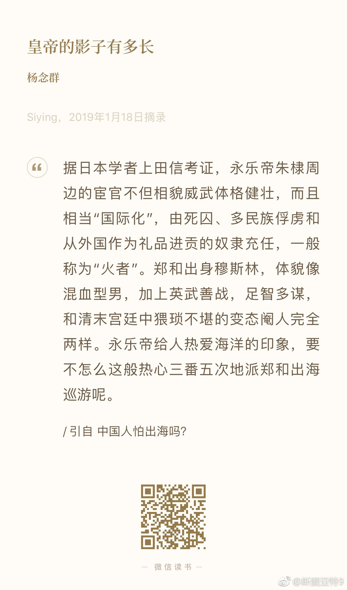

这个思路很有意思。明代初期之所以不同于宋代汉族政权的内敛，反倒是有向外发散的人气质，很有可能和这个政权初始的穆斯林气质有关系。朱元璋本身是不是穆斯林弄不好说，但他的政治集团的重要人物里穆斯林很多。另外朱元璋还有个大脚马皇后——不裹脚又姓马，不让人生出联想吗？然后问题来了，普遍的穆斯林法解读穆斯林女性不可以嫁给非穆斯林……好了跑题了，说回来，明代初期的外向型是不是和穆斯林气质有关，后来变内敛了是不是因为汉化了？
今天突然好奇起来，手欠在微博上搜索了一下RocksDB（过去五年工作都扑在这上面的这个开源项目）。结果发现平均一个月也就一条微博提到RocksDB，还大多数都是提到谁家做的系统用的什么引擎的时候顺便提到的。突然觉得有点失落……